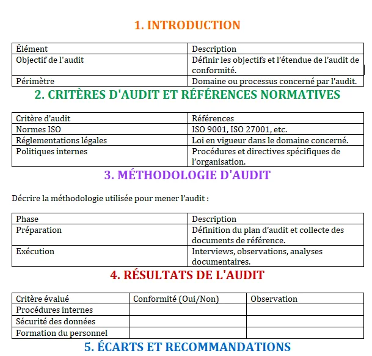

1. Contexte et objectif
L’objectif était de réaliser un audit de sécurité sur une infrastructure existante. Il fallait analyser l’exposition du système, repérer ses faiblesses et construire une restitution claire des problèmes identifiés.
2. Mon rôle dans la SAÉ
J’ai participé à l’analyse de l’environnement, à l’identification de vulnérabilités et à la formulation de recommandations. Mon rôle a aussi consisté à structurer le raisonnement pour produire un travail exploitable et cohérent.
3. Compétences et apprentissages critiques mobilisés
- AC24.04 : choisir les outils cryptographiques ou de sécurité adaptés ;
- AC24.06 : comprendre des documents techniques en anglais ;
- AC25.01 : administrer les protections contre les menaces logicielles.
Cette SAÉ est liée à la compétence Administrer un système d’information sécurisé.
4. Tâches réalisées
- Observation de l’infrastructure et de ses points d’exposition ;
- Recherche et identification de vulnérabilités ;
- Évaluation de leur impact potentiel ;
- Rédaction d’un rapport ou d’une synthèse de remédiation.
5. Traces du projet

Template du rapport d’audit que j’ai utilisé pour structurer mon travail (introduction, méthodologie, résultats et recommandations).
6. Analyse de ma progression
Cette SAÉ m’a permis de comprendre qu’en cybersécurité, l’analyse est aussi importante que l’action. J’ai appris à regarder une infrastructure avec un œil plus critique et à m’interroger sur ce qu’un attaquant pourrait exploiter.
7. Difficultés rencontrées
La principale difficulté a été de hiérarchiser les informations et de distinguer les vulnérabilités importantes de celles qui l’étaient moins. Il fallait aussi rester précis dans l’analyse sans perdre de vue l’objectif global.
8. Ce que j’ai mis en place pour les surmonter
J’ai essayé d’avancer avec une logique de priorisation : comprendre le contexte, repérer les points sensibles, puis formuler des recommandations claires. Cette méthode m’a aidé à mieux structurer ma réflexion.
9. Autoévaluation
Cette SAÉ a confirmé mon intérêt pour l’audit et la cybersécurité. Je me sens plus à l’aise pour analyser une infrastructure et en dégager les points faibles. Je dois encore progresser sur la profondeur technique de certaines analyses, mais la démarche est de plus en plus naturelle.
10. Réinvestissement possible
Ces acquis sont directement réutilisables dans des missions d’audit, de sécurisation de services ou d’analyse de vulnérabilités dans un environnement professionnel.